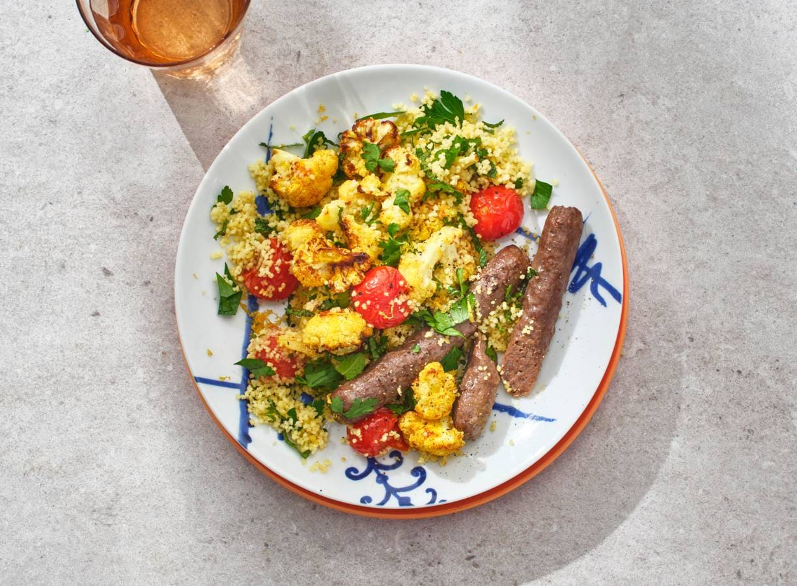

Couscoussalade met bloemkool en chipolata

Koken voor 2? Met ruim de dagelijkse aanbevolen hoeveelheid groente en nog geen halfuur bereidingstijd is deze couscoussalade het antwoord! Lekker op smaak gebracht met ras el hanout en munt met een chipolataworstje erbij.
Ingredienten (4 personen)
- 300 gram couscous
- 8 el milde olijfolie
- 8 runderchipolataworstjes
- 1 kilo bloemkool
- 250 gram cherrytomaten
- 2 eetlepels ras el hanout
- 15 gram verse peterselie
- 15 gram verse munt
- 2 biologische citroenen
Aan de slag
- Bereid de couscous volgens de aanwijzingen op de verpakking. Verhit ondertussen ¼ van de olie in een hapjespan op middelhoog vuur. Bak de worstjes in 5 min. rondom bruin en haal uit de pan.
- Snijd ondertussen de bloemkool in kleine roosjes en halveer de tomaatjes. Verhit ¼ van de olie in de hapjespan op hoog vuur. Bak de bloemkool, tomaat en ras el hanout 8-10 min. Breng op smaak met peper en eventueel zout.
- Snijd de peterselie grof. Pluk de blaadjes van de takjes munt en snijd fijn. Boen de citroen schoon, rasp de gele schil en pers de vrucht uit. Maak een dressing van de rest van de olie, het citroensap en -rasp, de munt en peper.
- Meng de couscous met de groente, ¾ van de peterselie en dressing. Breng op smaak met peper en eventueel zout. Verdeel over de borden en bestrooi met de rest van de peterselie. Serveer met de worstjes.
Home